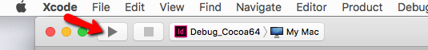
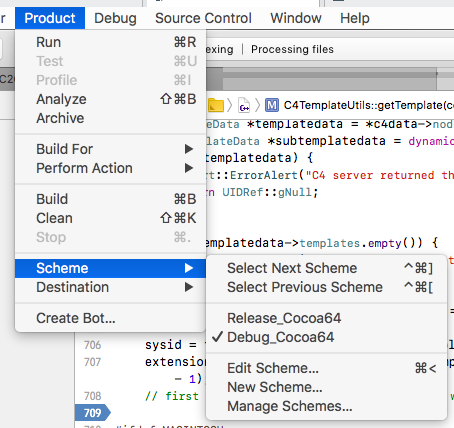
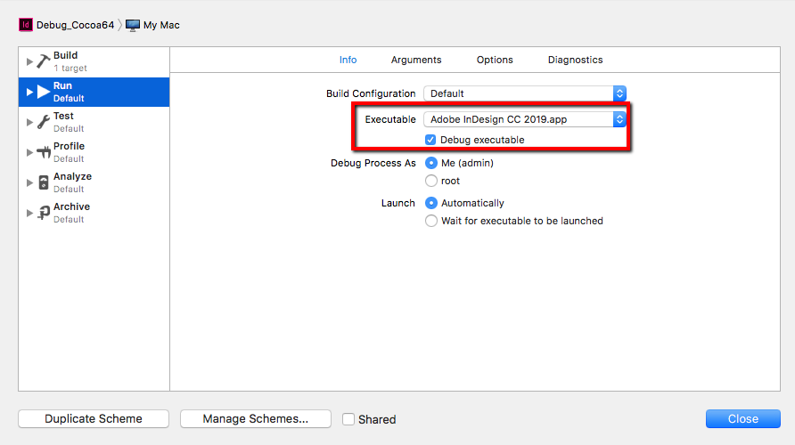
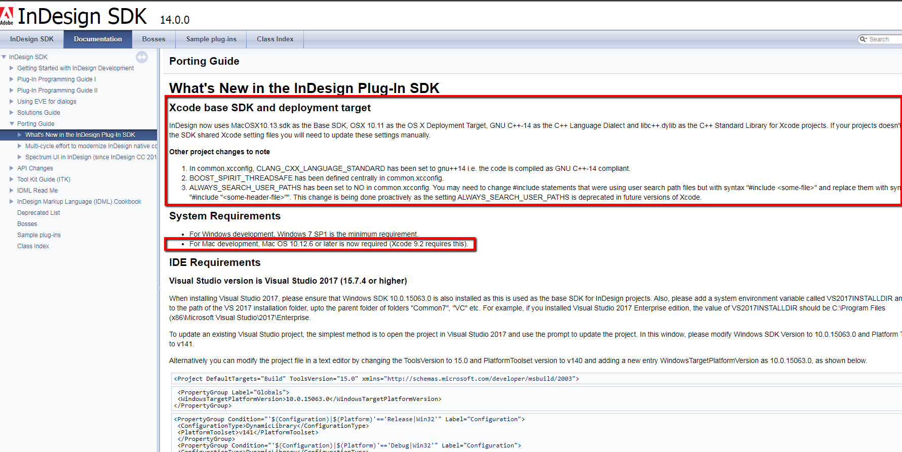
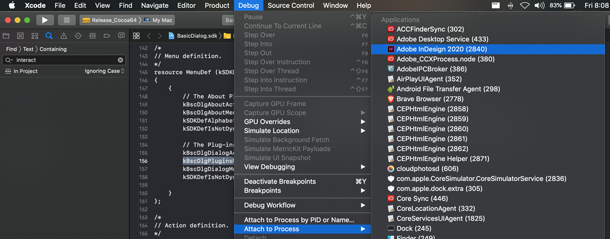

How to debug Indesign plugin source code in Xcode?
You need debug version and you need to create a debug schema



.... and you need to download the right version of InDesign SDK

Unzip to a folder and open index.html from /docs/html
In the first step, you should debug Adobes sample plugins. (eg BasicDialog)
You can found examples in the SDK folder /build/mac/prj folder
Also, the other way is to use "Attach to Process" Option. Launch InDesign with your plugin loaded and then in XCode use Debug > Attach to Process and select then select InDesign process. If the plugin is loaded correctly and the debug symbols are generated for it, the breakpoints in the code would start working. See screenshot below

Also to mention, although access to the Debug version of InDesign is the best case to obtain the maximum possible help during debugging.
However, you can debug the plugin in the release version of InDesign as well, make sure you generate debugging symbols when you build your project and then follow the process to debug as mentioned in the previous posts.
Although this won't be an ideal situation it would still be better than no debugging at all.